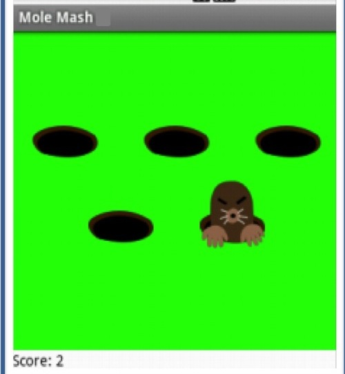

Oct. 2016
App Inventor Project
This is one of my first ever projects I have worked on.
For this app, we used a program that allowed us to work and
add features to a game. During this time my partner and I came
up with many features to add on. For example, we had wanted to add
different color mole, or more animals that if were hit you'd end
up losing a certain amount of points. Although the idea wasn't
able to become one of our features we had made many more. Some
of them were, timer, sound effects and background music, rest,
stop, and go button.